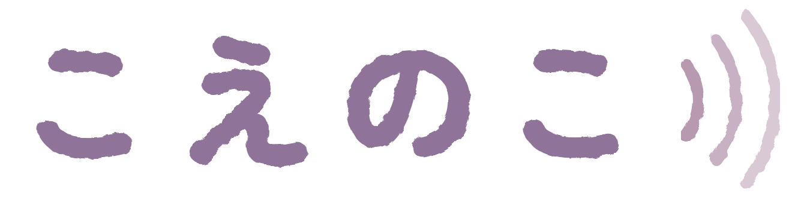

育てる
でかける

声から生まれる、羊毛の子
はじめる
じゅんび中
最初からはじめますか？
やめる
消して最初から
水浴び
鳴き声
環境音
足音
効果音
でかけるのカメラ
ついてくる
うしろ
見下ろし
左右
ふつう
逆
上下
ふつう
逆
デバッグ
型
よつあし
クマ
ウサギ
鳥
ヘビ
イタチ
アザラシ
トビネズミ
色あい
明るさ
毛
ふつう
墨
白
差し色
この組み合わせで生む
皮
ON
OFF
骨筋
ON
OFF
タイトルにもどる
最初からはじめる
風でよぶ
なまえ（変えられます）
とじる
なまえ（変えられます）
この子を育てる
べつのたまごをつくる
やめる
覚えなおすと、いまの歩き方は消えて、よちよちから練習しなおします
このまま見守る
歩き方を覚えなおす
あたらしい子を生む
押しながら話す
子にもどる
声のみほん
声のみほん（マイクのかわりに）
ひくい声
たかい声
ちいさい子
ささやき
がらがら声
はやくち
声はこの端末の中だけで数にして、送らない・保存しない